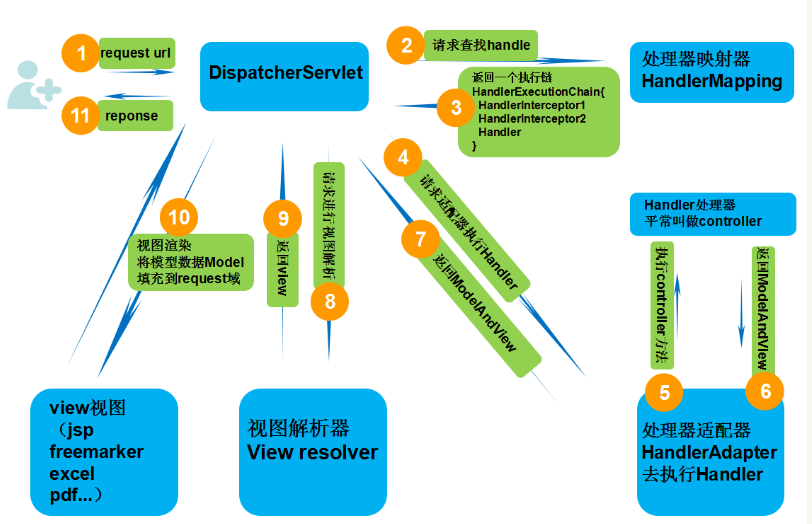

引言🐱👓
Spring
Spring就像是整个项目中装配bean的大工厂，在配置文件中可以指定使用特定的参数去调用实体类的构造方法来实例化对象。也可以称之为项目中的粘合剂。Spring的核心思想是IoC（控制反转），即不再需要程序员去显式地new一个对象，而是让Spring框架帮你来完成这一切。
SpringMVC
SpringMVC在项目中拦截用户请求，它的核心Servlet即DispatcherServlet承担中介或是前台这样的职责，将用户请求通过HandlerMapping去匹配Controller，Controller就是具体对应请求所执行的操作。SpringMVC相当于SSH框架中struts。
mybatis
mybatis是对jdbc的封装，它让数据库底层操作变的透明。mybatis的操作都是围绕一个sqlSessionFactory实例展开的。mybatis通过配置文件关联到各实体类的Mapper文件，Mapper文件中配置了每个类对数据库所需进行的sql语句映射。在每次与数据库交互时，通过sqlSessionFactory拿到一个sqlSession，再执行sql命令。
页面发送请求给控制器，控制器调用业务层处理逻辑，逻辑层向持久层发送请求，持久层与数据库交互，后将结果返回给业务层，业务层将处理逻辑发送给控制器，控制器再调用视图数据。
Spring
Spring是一个基于IOC和AOP的结构J2EE系统的框架。
AOP（Aspect Oriented Program）面向切面编程。
Spring 所依赖的Jar包
spring-core：是Spring的核心工具包
spring-cji：是核心包所需的依赖包，
spring-aop：Spring的面向切面编程，提供AOP（面向切面编程）的实现
spring-beans：Spring IOC的基础实现，包含访问配置文件、创建和管理bean等
spring-context：在基础IOC功能上提供扩展服务，此外还提供许多企业级服务的支持，有邮件服务、任务调度、JNDI定位，EJB集成、远程访问、缓存以及多种视图层框架的支持
spring-expression：spring表达式语言，就像EL表达式一样的东西
commons-logging：这个是只是一个日志包，不用理会
Spring模块介绍
- Core Container(核心容器)：spring-core, spring-beans, spring-context, springcontext-support, and spring-expression
- spring-core, spring-beans： 提供框架的基本部分，包括IoC和依赖项注入特性
- spring-context：为core,bean模块提供坚实基础
- spring-context-support：整合支持第三方库到spring中，包括：caching缓存,mailing,scheduling调度,template engines模板
- spring-expression：提供在运行时查询和操作对象图的强大的表达式语言
- AOP and Instrumentation：切面编程
- spring-aop：
- spring-aspects：
- spring-instrument：
- Messaging
- spring-messaging：
- Data Access/Integration
- spring-jdbc：
- spring-tx：
- spring-orm：
- spring-oxm：
- spring-jms：
- Web
- spring-web, spring-webmvc, spring-websocket, and springwebmvc-portlet modules.
- Test
- spring-test
IOC/DI
简介
IOC（Inversion Of Control）反转控制是Spring的基础，简单来说就是将通过new构造方法创建对象，变成交由Spring创建。
DI（Dependency Inject）依赖注入，是拿到对象的属性，已经被注入好相关的值，直接使用即可。
控制反转是目的、依赖注入是手段，它提供一种机制，将需要依赖（低层模块）对象的引用传递给被依赖（高层模块）对象 。
+++
bean的种类
普通的bean：
，spring直接创建A的实例并返回。 FactoryBean：是一个特殊的Bean，具有工厂生产对象的能力，只能生成特定的对象。bean必须思想FactoryBean接口，此接口提供方法getObject()用于返回特定的bean
先创建FB实例，使用调用getObject（）方法，并返回方法的返回值 ==》FB fb=new FB(); return fb.getObject();
属性依赖注入
setter注入
1 | <bean id="personid" class=""> |
p命名空间
对”setter“方法注入进行简化，替换
,而是在 p命名空间使用前提是必须添加命名空间，引用约束：xmlns:p=”http://www.springframework.org/schema/p"
spEL
对
进行统一编程，所有的内容都使用value #{123}、#{‘Jack&Rose’}：数字、字符串
#{beanId}：另一个bean引用
#{beanId.propName}：操作数据
#{beanId.toString}：执行方法
#{T(类).字段|方法}：静态字段或方法
集合
集合的注入都是给
添加子标签 数组：
List：
Set：
properties：
普通数据：
1 | <bean id="" class=""> |
装配bean基于注解
注解：就是一个类，取代@注解名称
开发中：使用注解，取代xml配置文件
需要引入dtd（命名空间的声明）
<?xml version=”1.0” encoding=”UTF-8”?>
<context:component-scan base-package=”bean层包名”></context:component-scan>
1、@component取代<bean class="">
@component(“id”)取代<bean id="" class="">
2、web开发，提供了3个@component注解衍生注解（功能一样）
@Repository：dao层
@Service：service层
@Controller：web层
Spring IOC实例
1.导入相关jar包（以Maven形式展现）
1 | <dependencies> |
2.bean层类
1 | package bean; |
3.新建一个Spring配置文件（applicationContext（spring）.xml）
1 | <!-- 该文件中产生的所有对象，被Spring放入了一个称之为springIOC容器的地方 --> |
4.测试类中使用
1 | ApplicationContext ac = new ClassPathXmlApplicationContext("applicationContext.xml"); |
AOP
aop术语
1.target：目标类，需要被代理的类
2.joinpoint：连接点，所谓链接点是☞那些可能被拦截的方法
3.advice：通知/增强，增强代码。例如after、before
4.pointcut：切入点，已经被加强的连接点，例如add user()
5.weaving：织入，指把增强advice应用到目标对象target来创建新的代理对象的过程
6.proxy：代理类
7.aspect：切面，是切入点pointcut和通知advice的结合
手动代理例子
UserService
1 | public interface UserService { |
Myaspect
1 | public class Myaspect { |
MybeanFactory
1 | mport java.lang.reflect.InvocationHandler; |
test
1 | public class test { |
运行结果
1 | ------after |
Spring MVC
概述
Spring Web MVC是一种基于Java的实现Web MVC设计模式的请求驱动类型的轻量级Web框架。即使用MVC架构模式的思想，将web层进行职责解耦，基于请求驱动指的就是使用请求-响应模型，框架的目的就是帮助我们简化开发。
MVC三元组的概念
Model（模型）：组件等价于实体层+业务逻辑层+持久层
View（视图）：负责进行模型的展示，一般就是我们见到的用户界面，客户想看到的东西。
Controller（控制器）：接收用户请求，委托给模型进行处理（状态改变），处理完毕后把返回的模型数据返回给视图。
SpringMVC框架请求处理流程

SpringMVC示例
Step 01：导入依赖
1 | <dependency> |
Step 02：创建控制器
1 | public class FirstController implements Controller { |
Step 03：创建大配置文件（applicationContext-mvc.xml）
1 |
|
Step 04：中央调度器（web.xml）
1 |
|
Step 05：index.jsp
1 | <% language="java" pageEncoding="UTF-8" contentType="text/html; UTF-8" isELIgnored="false" %> |